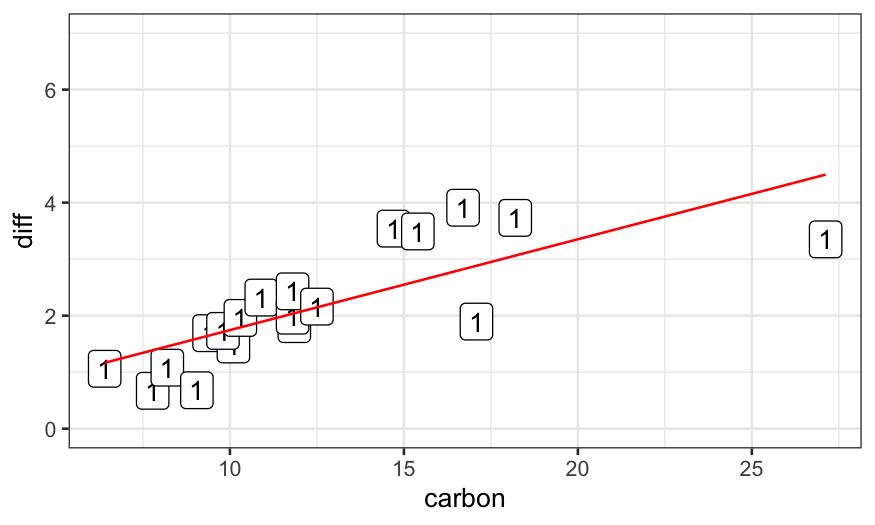
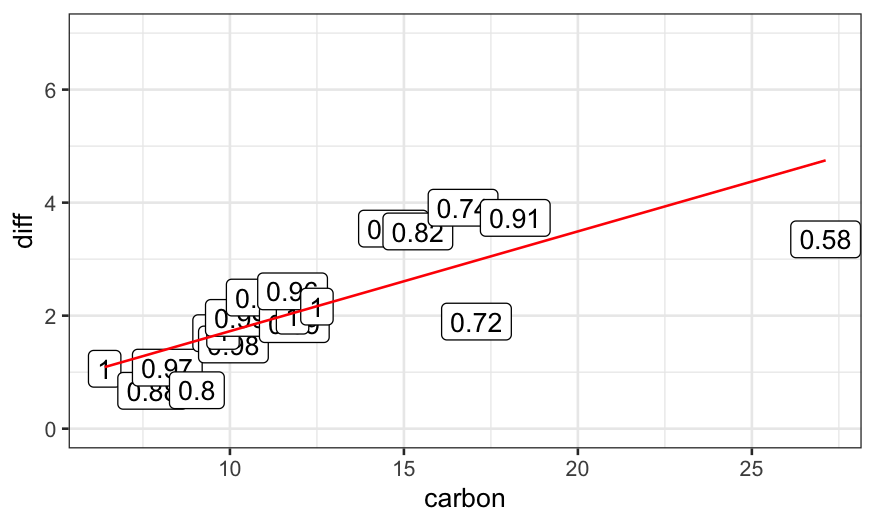
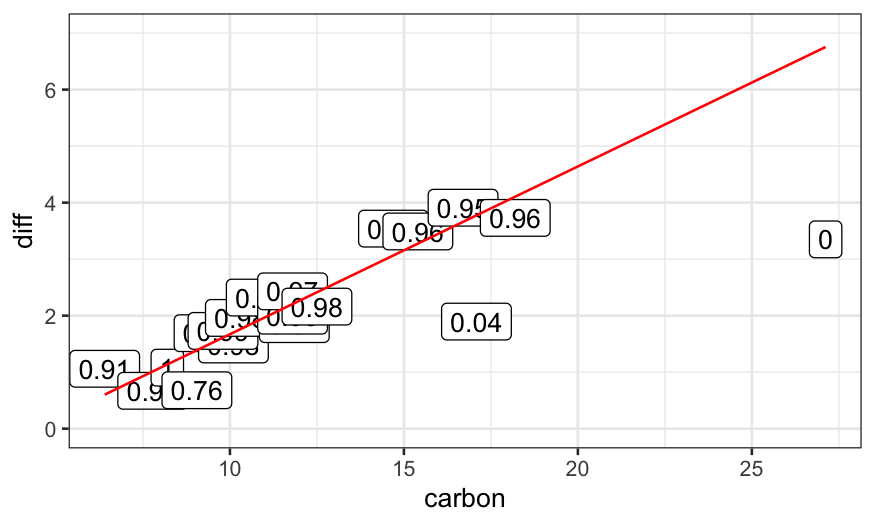
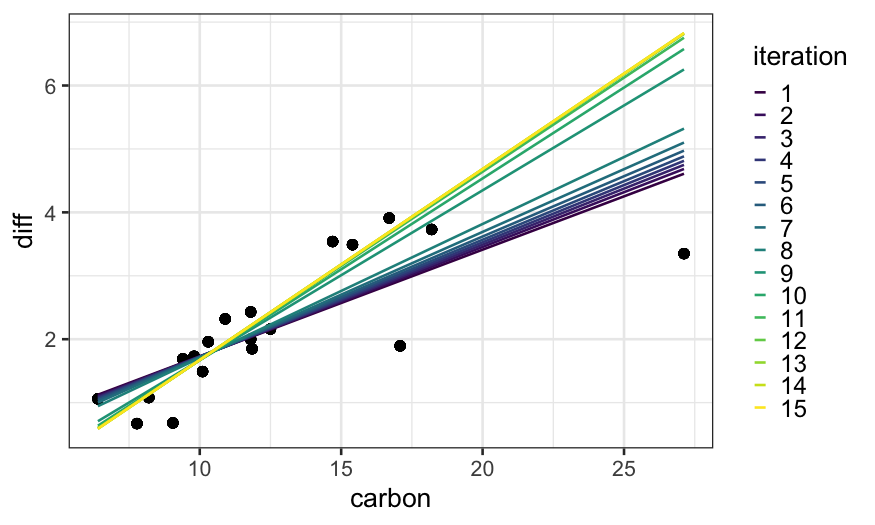
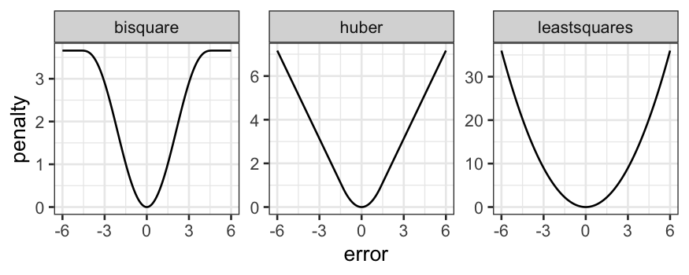
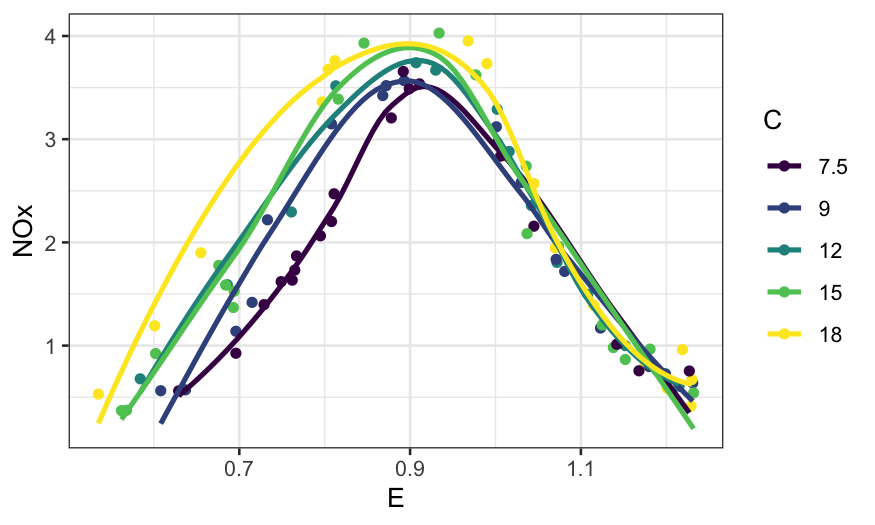
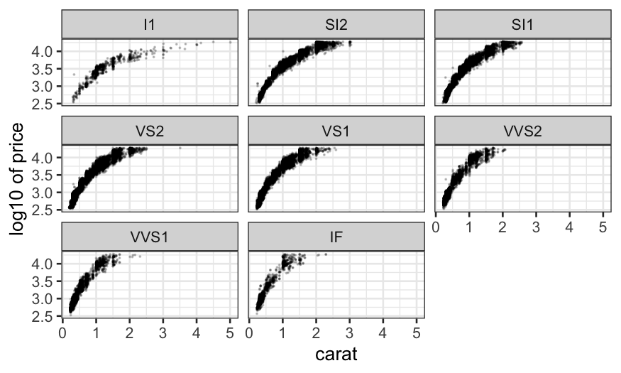
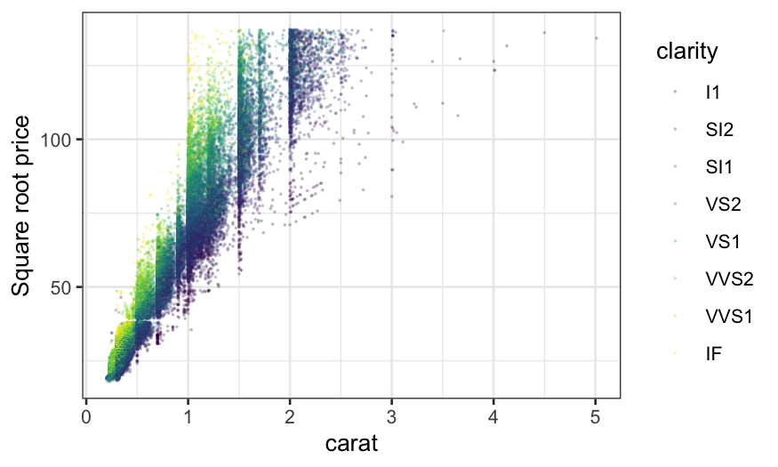
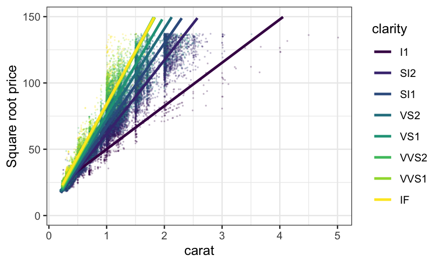
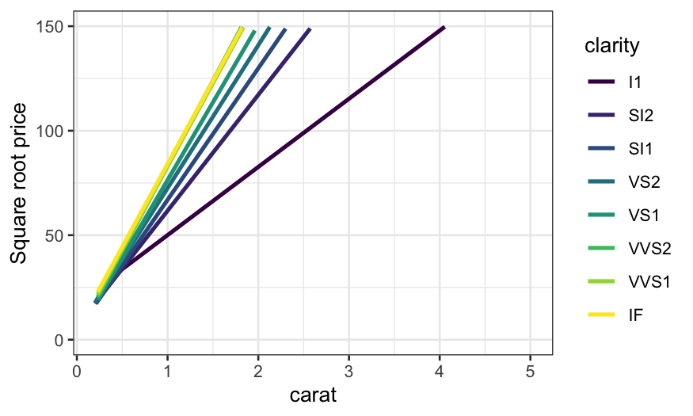

Stat 470/670 Lecture 10: Robust regression
Julia Fukuyama
Robust regression
Reading: Cleveland pp. 110-119.
Supplemental
reading
The data set dating (in lattice.RData)
contains paired observations giving the estimated ages of 19 coral
samples in thousands of years using both carbon dating (the traditional
method) and thorium dating (a modern and purportedly more accurate
method.) What’s the difference between these two methods?
## ── Attaching packages ─────────────────────────────────────────────────────────────── tidyverse 1.3.1 ──
## ✔ tibble 3.1.6 ✔ dplyr 1.0.7
## ✔ tidyr 1.1.4 ✔ stringr 1.4.0
## ✔ readr 2.1.1 ✔ forcats 0.5.1
## ✔ purrr 0.3.4
## ── Conflicts ────────────────────────────────────────────────────────────────── tidyverse_conflicts() ──
## ✖ dplyr::filter() masks stats::filter()
## ✖ dplyr::lag() masks stats::lag()
library(ggplot2)
library(broom)
library(viridis)
## Loading required package: viridisLite
##
## Attaching package: 'MASS'
## The following object is masked from 'package:dplyr':
##
## select
load("../../datasets/lattice.RData")
ggplot(dating, aes(x = carbon, y = thorium - carbon)) +
geom_point()

Last time, we saw that the linear regression line doesn’t follow the
data well, seemingly because the couple of outliers with high
carbon values are dragging the line down. We also saw that
robust regression fixes this problem.
library(MASS)
dating = dating %>% mutate(diff = thorium - carbon)
dating.lm = lm(diff ~ carbon, data = dating)
dating.rlm.huber = rlm(diff ~ carbon, data = dating, psi = psi.huber, maxit = 100)
dating.rlm.bisquare = rlm(diff ~ carbon, data = dating, psi = psi.bisquare)
ggplot(dating) +
## raw data
geom_point(aes(x = carbon, y = diff)) +
## rlm bisquare fit
geom_line(aes(x = carbon, y = dating.rlm.bisquare$fitted.values), color = 'red') +
## rlm huber fit
geom_line(aes(x = carbon, y = .fitted), color = 'orange', data = augment(dating.rlm.huber)) +
## lm fit
geom_line(aes(x = carbon, y = .fitted), data = augment(dating.lm), color = 'blue')
Robust regression: Details for Tukey’s Bisquare
Overall idea: use weighted regression and down-weight the
outliers.
We use the bisquare weight function to down-weight the outliers:
\[
B(u) = \begin{cases}
(1 - u^2)^2 & |u| < 1\\
0 & |u| >= 1
\end{cases}
\]
The robustness weights are then defined as
\[
r_i = B\left(\frac{\hat \varepsilon_i}{ks}\right)
\]
where \(s = \text{median}(|\hat
\varepsilon_i|)\) and \(k\) is a
parameter that you can choose. Standard according to Cleveland is 6, but
in R the default is 4.685.
Notes:
If the errors are actually normal, \(6s\) corresponds to about \(4 \sigma\), and \(4.685s\) corresponds to about \(3 \sigma\) (the standard deviation of a
normal distribution is 1.48 times the MAD).
The \(ks\) in the denominator is
a tunable parameter that you can change, but the standard values are
chosen because they lead to good efficiency when the errors are normally
distributed.
Iteratively re-weighted least squares
Algorithm for robust regression:
- Start with an estimate of the regression line, e.g. standard least
squares
Repeat until convergence:
Compute robustness weights based on the estimated regression
line.
Perform weighted least squares with the robustness weights to get
a new estimate of the regression line.
Example
dating.rlm.0 = lm(diff ~ carbon, data = dating)
ggplot(dating) +
geom_point(aes(x = carbon, y = diff)) +
geom_line(aes(x = carbon, y = dating.rlm.0$fitted.values), color = 'red') +
ylim(c(0,7))

dating.rlm.1 = rlm(diff ~ carbon, data = dating, maxit = 1, psi = psi.bisquare)
ggplot(dating) +
geom_point(aes(x = carbon, y = diff)) +
geom_line(aes(x = carbon, y = dating.rlm.1$fitted.values), color = 'red') +
ylim(c(0,7))
dating.rlm.2 = rlm(diff ~ carbon, data = dating, maxit = 2, psi = psi.bisquare)
ggplot(dating) +
geom_point(aes(x = carbon, y = diff)) +
geom_line(aes(x = carbon, y = dating.rlm.2$fitted.values), color = 'red') +
ylim(c(0,7))
dating.rlm.3 = rlm(diff ~ carbon, data = dating, maxit = 3, psi = psi.bisquare)
ggplot(dating) +
geom_point(aes(x = carbon, y = diff)) +
geom_line(aes(x = carbon, y = dating.rlm.3$fitted.values), color = 'red') +
ylim(c(0,7))

dating.rlm.11 = rlm(diff ~ carbon, data = dating, maxit = 11, psi = psi.bisquare)
ggplot(dating) +
geom_point(aes(x = carbon, y = diff)) +
geom_line(aes(x = carbon, y = dating.rlm.11$fitted.values), color = 'red') +
ylim(c(0,7))

dating.rlm.12 = rlm(diff ~ carbon, data = dating, maxit = 12, psi = psi.bisquare)
ggplot(dating) +
geom_point(aes(x = carbon, y = diff)) +
geom_line(aes(x = carbon, y = dating.rlm.12$fitted.values), color = 'red') +
ylim(c(0,7))
To see how the algorithm gets to the final fit, we can solve for the
fits for all iterations between 1 and 15 and plot them:

Huber version of robust regression
Same idea as Tukey’s bisquare, but with a different definition of
robustness weights.
For Huber, we use robustness weights
\[
r_i = \begin{cases}
1 & \hat \varepsilon_i < k \\
k / |\hat \varepsilon_i| & \hat \varepsilon_i \ge k
\end{cases}
\]
Note that these robustness weights are never exactly equal to
zero.
Penalty interpretation
The presentation here and in Cleveland has been in terms of
down-weighting outliers.
We can also think of the robust regression techniques as being
modifications of least squares where the penalty changes.
For least squares, we find \(\beta_0\) and \(\beta_1\) to minimize
\[
\sum_{i=1}^n (y_i - (\beta_0 + \beta_1 x_i))^2
\]
For the robust methods, we change the square to something else,
finding \(\beta_0\) and \(\beta_1\) to minimize
\[
\sum_{i=1}^n p(y_i - (\beta_0 + \beta_1 x_i))
\]
For robust regression with Tukey’s bisquare, we take \[
p_B(e) = \begin{cases}
\frac{k^2}{6} \left[ 1 - (1 - (e/k)^2)^3 \right] & |e| < k \\
k^2 / 6 & |e| \ge k
\end{cases}
\]
For the Huber version of robust regression, we take \[
p_H(e) = \begin{cases}
\frac{1}{2} e^2 & |e| < k \\
k |e| - \frac{1}{2} k^2 & |e| \ge k
\end{cases}
\]
More useful is to look at the penalty functions:

Comparison of the two methods
Bisquare:
Can completely remove the influnce of outliers from the
regression line (the weight function is equal to \(0\) for outliers more than \(3\) or \(4\) standard deviations).
Doesn’t have a unique solution, can get stuck in local optima,
sometimes helps to give it a good initialization point.
Huber:
Never completely removes the influence of outliers from the
regression line (weight function is never equal to \(0\)).
Has a unique solution, no need to worry about local optima or
good starting points.
Other methods have other definitions of the weight function and allow
you to make different tradeoffs between tractability and outlier
removal.
Finishing up the dating example
We wanted to know about the relationship between the two dating
methods. We have a robust fit, but we still need to check whether it
fits the main part of the data well. We saw the residual plot last time,
and we can check normality of the residuals with a Q-Normal plot.
ggplot() +
stat_qq(aes(sample = dating.rlm.bisquare$residuals))
We see that, apart from the outliers, the residuals follow a line.
That means that the majority of the data seem to follow a normal
distribution, and we’re happy with the fit.
## Call:
## rlm(formula = diff ~ carbon, data = dating, psi = psi.bisquare)
## Converged in 15 iterations
##
## Coefficients:
## (Intercept) carbon
## -1.3373450 0.3010268
##
## Degrees of freedom: 19 total; 17 residual
## Scale estimate: 0.394
Examples of smoothers to support visualization
Smoothers can be very helpful visualization tools for comparing
bivariate models.
As an example, consider the ethanol dataset in
lattice.RData. The data are from an experiment studying
exhaust from a one-cylinder engine fueled by ethanol. The variables in
the dataset are
NOx: Concentration of NO plus NO2 (NOx), divided by
the amount of work the engine did.
E: The equivalence ratio at which the engine was
run, measuring the richness of the mixture of air and fuel (more fuel =
higher E).
C: The compression ratio to which the engine was
set, that is, the maximum volume inside the cylinder (volume with piston
retracted) divided by the minimum volume inside the cylinder (volume
with piston at maximal penetration).
We’ll look at this more when we start trivariate data in earnest, but
for now, note that there are only five values of C in this
experiment:
##
## 7.5 9 12 15 18
## 22 17 14 19 16
Because of this, we are going to treat C as a factor variable for
now. Let’s make it into an ordered factor:
ethanol = ethanol %>% mutate(Cfac = factor(C, levels = sort(unique(C)), ordered = TRUE))
Therefore, we can treat C as a factor variable and ask what the
relationship is between NOx and E for different values of C.
How would we investigate this?
We’ve seen faceting already:
ggplot(ethanol) + geom_point(aes(x = E, y = NOx)) + facet_wrap(~ Cfac)
With the faceting it’s hard to see differences between the curves.
What if we remove the faceting and label the different values of C by
color?
ggplot(ethanol, aes(x = E, y = NOx, color = Cfac)) +
geom_point() +
guides(color = guide_legend(title = "C"))
What about if we add smoothers?
ggplot(ethanol, aes(x = E, y = NOx, color = Cfac)) +
geom_point() +
stat_smooth(method = "loess", se = FALSE) +
guides(color = guide_legend(title = "C"))
## `geom_smooth()` using formula 'y ~ x'

Example: Diamonds data
Remember our good friend the diamonds dataset. The variables we’ll be
interested in for now are:
price: How much the diamond sold for.
carat: How big the diamond is.
clarity: How clear it is. This is coded is an
ordered factor (this is what <ord> at the top of the
clarity column means when you print out the diamonds
tibble) , higher clarities tend to be more rare and expensive.
We’ve already looked at the relationship between price and carat, and
we’d like to see how the relationship varies with clarity. Let’s try
investigating in a couple of ways.
First try faceting out by clarity:
ggplot(diamonds, aes(x = carat, y = price)) + geom_point(size = .1, alpha = .2) + facet_wrap(~ clarity)
We notice that the relationship is hollow up, and so we remember what
we learned about straightening out relationships and try
log-transforming price.
ggplot(diamonds, aes(x = carat, y = log10(price))) +
geom_point(size = .1, alpha = .2) + facet_wrap(~ clarity) +
ylab("log10 of price")

log-transform is too much (now it’s hollow down), so we try an
intermediate transform, the square root.
ggplot(diamonds, aes(x = carat, y = sqrt(price))) +
geom_point(size = .1, alpha = .2) + facet_wrap(~ clarity) +
ylab("Square root price")
The square root does a good job at straightening out the
relationship. Note that we could also have used the square of carat to
predict price, which would have also straightened out the relationship
and which might be more interpretable. We’ll stick with square root of
price for now though.
The problem with faceting out is that it’s hard to compare the
slopes. We can try plotting everything together and using color to
indicate clarity.
ggplot(diamonds, aes(x = carat, y = sqrt(price), color = clarity)) +
geom_point(size = .1, alpha = .2) +
ylab("Square root price")

This helps a bit, and we see the general trend that the slope
increases with clarity, but there’s still a lot of overplotting and it
is hard to compare the relationships. Let’s try adding a linear
smoother.
ggplot(diamonds, aes(x = carat, y = sqrt(price), color = clarity)) +
geom_point(size = .1, alpha = .2) +
stat_smooth(method = "lm", se = FALSE) +
ylim(c(0, 150)) +
ylab("Square root price")
## `geom_smooth()` using formula 'y ~ x'
There seemed to be some outliers, particularly in the low clarities,
so we might want to try a robust linear smoother. This changes the
slopes slightly.
ggplot(diamonds, aes(x = carat, y = sqrt(price), color = clarity)) +
geom_point(size = .1, alpha = .2) +
stat_smooth(method = "rlm", method.args = list(psi = psi.bisquare, maxit = 40), se = FALSE) +
ylim(c(0, 150)) +
ylab("Square root price")
## `geom_smooth()` using formula 'y ~ x'

With either of the smoothers, we can see much more clearly how the
relationship changes with clarity. The slopes for the top three levels
of clarity are virtually identical, the lowest clarity has the lowest
slope, and the intermediate levels have approximately equally spaced
slopes. We see this more clearly if we take away the points.
ggplot(diamonds, aes(x = carat, y = sqrt(price), color = clarity)) +
stat_smooth(method = "rlm", method.args = list(psi = psi.bisquare, maxit = 40), se = FALSE) +
ylim(c(0, 150)) +
ylab("Square root price")
## `geom_smooth()` using formula 'y ~ x'
